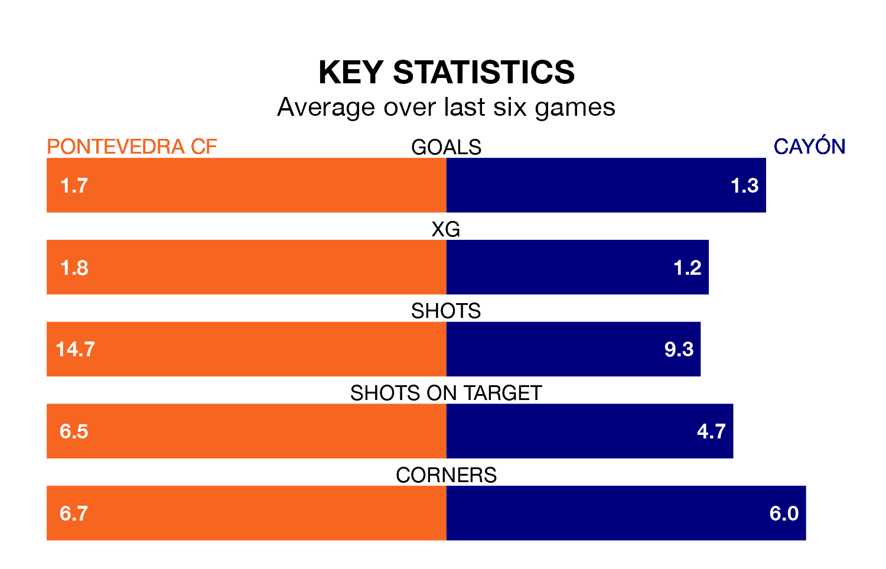

Pontevedra CF are heavy favourites to keep all three points at home in Sunday's kick-off against Cayón.
Pontevedra, who sit second in Segunda División RFEF Group 1 with 20 games played, are priced at 1.3 to seal victory at Estadio Municipal de Pasarón.
Sitting 12 places and 20 points behind them in the table, Cayón are 9.5 to win with *Betting Company*, while the draw is at 4.6.
With 42 goals in 20 games so far this season, Pontevedra are the league's highest scorers with 2.1 goals per game. And they are conceding fewer than average, letting in 13 goals at a rate of 0.7 per game.
Cayón, meanwhile, are below average scorers, with 1.0 goal per game, compared to a league average of 1.1. They have conceded 1.2 goals per game.
The hosts are in reasonable form in Segunda División RFEF Group 1, with three wins and three draws from their last six games.
With two wins and two draws over that period, the away side's form is worse – they have taken eight points from 18, compared to Pontevedra's 12.
Pontevedra's last match was on January 28, a 0-0 draw against Langreo.
Cayón beat Coruxo 2-1 last time out, also on January 28.
Updated: 09:21 (UTC), 30/01/24